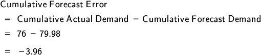

When it comes to designing a supply chain, factors to consider include translating organizational strategy into supply chain design and configuring the network in terms of the location and size of facilities and transportation design. Collectively, the decisions made regarding each of these factors should always support the organizational strategy and the supply chain strategy.
An organization sets a strategy based on its capabilities and its assessment of how it will compete in its environment. Supply chain managers then determine a complementary supply chain strategy (as do other functional areas) that will support and enable that organizational strategy. For example, if the organizational strategy is to compete on low cost for commodity items, the supply chain strategy will need to be designed to be as low cost and automated as possible rather than attempting to be the fastest or most responsive. Since strategies are by definition high-level, long-term plans, the next step for supply chain managers is to translate the supply chain strategy into a more tactical, granular level of planning: supply chain design and configuration.
📖 ASCM Definition — supply chain design:
After developing business, organizational, and supply chain strategies, the organization—or the trading partners collectively—need to support the broad strategies by defining measurable objectives for each manager along the supply chain. To borrow from the SCOR DS® model, the process is still in the plan phase, when objectives are defined. This phase sets the direction for all the other processes—orchestrate, source, transform, order, fulfill, and return. Strategy and objectives are developed first at top management levels and filter down through the levels of management on each trading partner's organizational chart.
It's tempting to say that all decisions affecting the supply chain should be based on organizational and supply chain strategies. But it's more realistic to say that the decisions and the strategy should be aligned, because this is analogous to the "which came first—the chicken or the egg" puzzle. Whichever way you look at the matter, however, priorities must be set strategically. We'll look at the way strategic decisions are made in regard to customers and markets, technology, key processes and flows, and sourcing.
Supply chains should be configured to reflect customers' needs as well as trading partners' capacities. There is no universally appropriate supply chain strategy. One example of this variability is Inditex, which holds several fashion brands including Pull & Bear, Massimo Dutti, Stradivarius, Oysho, and notably the Spanish clothing brand Zara, with its two distinct supply chains: one for its more functional products and the other for its fashion products. A company with multiple product lines needs to conduct a careful market assessment and match multiple supply chains to the strategy that is right for each market.
Since technology has become the powerful force that extends supply chain visibility across multiple tiers while providing world-shrinking velocity, it deserves serious consideration as an aid to achieving strategic objectives. It's beneficial to weigh the advantages and disadvantages of technology or conduct a benefit-cost analysis. Since technology is expensive to install or lease, sometimes difficult to learn, and, for some, downright threatening, it's important to make informed choices.
There is a lot to choose from, including technology that can increase the velocity and accuracy of information flows, cash flows, checkout processes, inventory tracking, production scheduling—virtually any process of any length inside the supply chain. Whatever the process you're aiming to improve, technology has become a necessary component of that improvement. But it has to be selected by specialists who know what is current and can guide process stakeholders in choosing the appropriate technology infrastructure at the right initial and ongoing price to conform to overall strategy. The collateral effects of new technology have to be taken into account as well. The theory of constraints tells us that there is no point in buying expensive technology solutions to speed up the flow of information, materials, or payments if they will just be sent speeding into a bottleneck (or constraint) that will stop their progress. Most importantly, each organization needs the right technology applied to the right process by the right people.
Elsewhere we'll look at technology architecture decisions that relate to supply chain design. Other important considerations in this area include
Determining how frequently data should be transferred and analyzed
Deciding how data will be cleansed, analyzed, and used
Designing and setting up infrastructure internally and between supply chain partners
Integrating IT and decision support systems into competitive strategy.
A supply chain is a set of processes, and these processes can be fine-tuned to suit each customer segment. When planning improvement initiatives, select the processes that are central to the supply chain strategy, measure and benchmark them, and focus your attention on one process or a small manageable number of processes.
The four basic flows in supply chains are the flow of information, the primary product flow, the primary flow of cash, and the reverse flow of products.
The four basic flows in supply chains are the flow of information, the primary product flow, the primary flow of cash, and the reverse flow of products. Customer information flows through the organization and the extended enterprise via orders, sales activity, and forecasts. As products and materials are procured, a value-added flow of goods begins. Understanding how these flows touch many internal and external parties helps supply chain managers determine who will be affected by a supply chain design and thus who needs to be involved in the design effort.
📖 ASCM Definition — sourcing:
The trend in the latter decades of the 20th century and early in this century has been toward contracting non-core activities to supply chain partners. These partners may be located near at hand or offshore. As supply chains grow in length and global dispersion, they can locate each partner in the country or region best suited by raw material proximity, customer proximity, climate, culture, resources, tax policy, etc., to support each specific activity.
Outsourcing was initially a strategy in manufacturing supply chains. However, advances in computer hardware and software and global broadband networking have enabled global outsourcing of service activities, such as help desks, accounting, and medical testing. Accounting activities, for example, can be carried out across multiple time zones. Working half a world away, a day-shift accountant can perform services during the customer's nighttime hours.
Supply chain network configuration is a complex strategic decision that concerns the comprehensive organization of suppliers, production factories, distribution centers, and manufacturing resources. Supply chains should be configured to reflect customers' needs and trading partners' capacities. Planning a network that provides an optimal return on all investments requires long-term, strategic thinking. Each decision must be weighed based on its impact on the entire supply chain, not only on the single matter under consideration.
Given information on customer demand, product and service requirements, and supply chain partner requirements, the optimal network configuration needs to consider the following variables:
Location of plants and production capacities for each product
The supply chain manager's challenge is forecasting future demand as accurately as possible and keeping inventory as low as possible without disruptions in delivery to customers.
For example, supply chain managers in manufacturing enterprises consider the stocking of distribution centers with an optimal level of the right kinds of inventory and establish transportation links that ensure timely arrival at, and departure from, distribution centers. In the ideal network, raw materials, components, and resources might never be at rest in a warehouse. Instead, they would always be in motion until arriving, just in time, at each location along the chain. One reason this ideal state is difficult to achieve is the fluctuation in demand that occurs all along the supply chain, beginning with the ultimate customer. Unpredictable demand, along with other factors such as accidents and adverse weather conditions, means that maintaining some levels of inventory at various locations along the chain is generally necessary. The supply chain manager's challenge is forecasting future demand as accurately as possible and keeping inventory as low as possible without disruptions in delivery to customers. Elsewhere you will learn more about planning and controlling inventories, the related cost categories, how inventory impacts an organization's financial statements, and inventory management and control.
Another example is warehousing for customer goods. Adding to the number of warehouses may have the benefit of putting goods closer to the customer and thus reducing delivery time. It may also have the drawback of adding to total inventory and increasing the footprint of warehouse space necessary to store a given amount of goods. Up to a point, putting goods closer to retail outlets or within customer shipping zones tends to benefit the supply chain by reducing transportation costs.
Transportation costs are a function of several variables, including total distance between production facilities, warehouses, retail outlets, or customers; bulk discounts for transport; and types of transportation required. To solve the optimization problem for the entire network, supply chain managers must rely upon the most powerful technology available to them.
As supply chains grow in length and complexity, facilities may be spread out among numerous regions, countries, and continents. A variety of statistics demonstrate how global sourcing and offshore manufacturing can reduce supply chain costs. Employing skilled labor at relatively low wage levels, establishing worldwide or regional centers of competence near major specialized talent pools, savings on materials, and finding new sources of supply are examples.
While global expansion is attractive, offshore expansion requires sufficient due diligence to help ensure success. Specifically, from a logistics perspective, there are many issues related to getting business done and getting a product shipped. This means being aware of local infrastructure issues in the country being evaluated, as summarized in Exhibit 2-1.

The condition and capacity of port facilities, airports, and roads can be major factors in getting goods and supplies shipped reliably and on a timely basis. Different rail track gauges and capacity issues can adversely affect lead times. Additionally, crossing borders involves high volumes of paperwork.